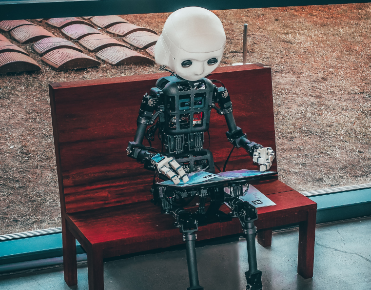
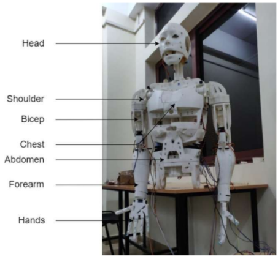
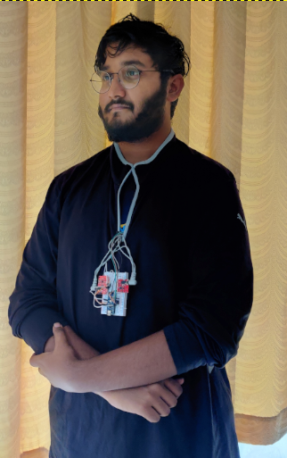
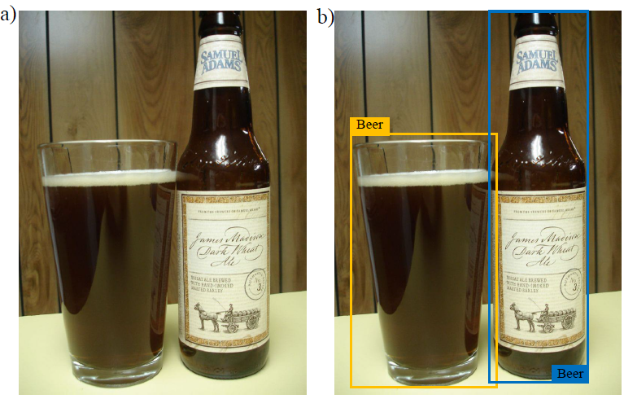
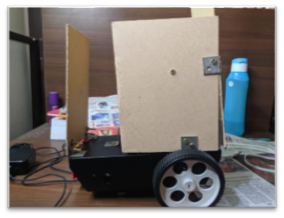
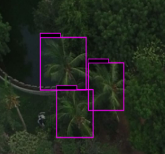
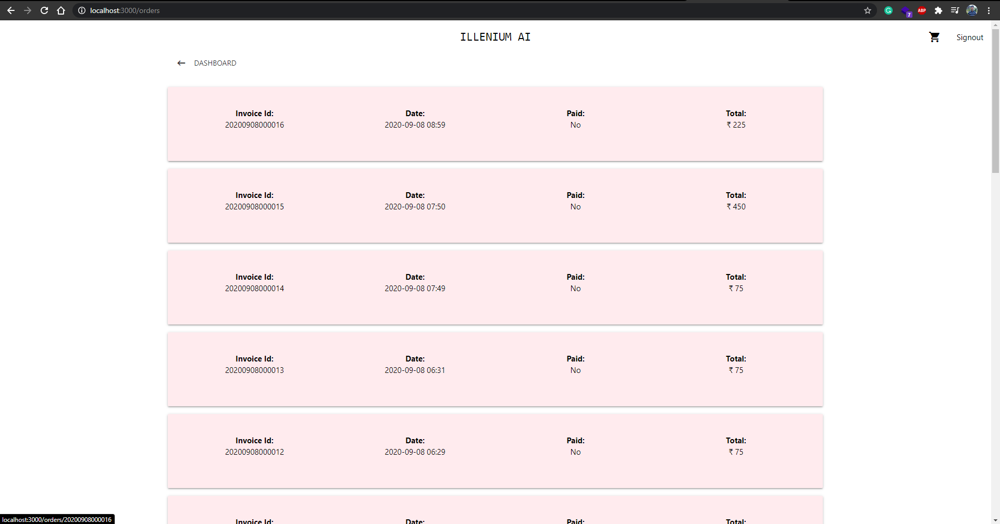
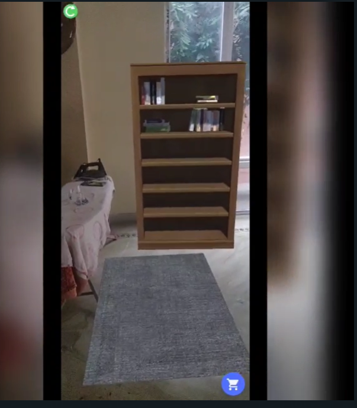

AI and Robotics Center (AIR)
The AIR Lab is an initiative brought to reality in VIT APUniversity and its the first
of its kind in the country.
Set up with the aim of learning about the latest
technologies of the field like Deep Learning, Machine
Learning and Robotics,
the AIR Lab has given students a platform to not only learn about them but
work with them to build something unique.
The lab makes an ideal
technology-rich environment to promote student-driven learning and provides
a
new approach to learning rather than the customary way.
The lab has grown
with more students coming in with unique ideas worth working on. With the
support of
the faculty, the aim is to be a place of harmony for ideas and latest
technologies, and make them a
reality.

Thrust Areas
Projects
TARS
T.A.R.S is a quadruped that can walk at any terrain. The
main aim of the project is to leverage this technology in
botanical gardens so as to monitor plant health. The other
application of it being monitoring condition of the crop.
T.A.R.S uses unique creep gait. It is specially
programmed to mimic human and spider movement
simultaneously. The program being quite small is written
to have tars move over 500 steps at one Command.

VISU
VISU(VIT-AP Intelligent super Utility) is a
3D printed robot built from scratch using
minimal design and simple yet sophisticated
electronics. Backed by Arduino and
Raspberry pi and customized so as to make it
modular in terms of design and technology
that expands its range of abilities.
The robot comes equipped with Voice and
Face recognition tech. The arms and torso are
powered by high torque Servo motors that
provide enough power to lift a baby. Powered
by over 25 motors, the robot can effortlessly
mimic human movement. Every piece of tech
involved has been hacked, modified and
customized to satisfy constraints that were
once a limitation.
This research published in IEEE Consumer
Electronics (Impact Factor: 4.01)

Vinci X
Vinci X is a body vital monitoring garment that records body vitals and sends
them to cloud and app where Machine Learning algorithms analyze the data
and provide user with a detailed report both in real-time and post-workout.
Users can in real-time check their individual muscle activity and ECG along
with other vitals. A visualization shows, graphically, the exerted muscle force
and areas to work on. The same report can be sent to a trainer or a physician
and seek help.The garment has embedded sensors in it.All the sensor values
are transmitted to app and cloud with a cellular based ARC that powers the
suit and is detachable. Customers can use this garment to help them with
working on weak areas and increase workout efficiency by 65%.
This research published in IEEE Transactions on Consumer Electronics.

Cleo: Smart Glasses to monitor intake of alcohol and number of smokes
Over 60% of people around the globe consume Alcohol and Cigars daily. Many intake them beyond the
permitted limit causing disease such as lung cancer, Liver and kidney Failure. Chain-smokers and Alcoholics
do not have a metric or system that monitors their intake level and alerts the user in case of excess
consumption. To help users monitor their consumption, we introduce Cleo Eyeglasses in this research. Cleo
is a wearable spectacles with mounted camera and single board computer that performs custom trained object
recognition to identify alcoholic beverages and cigarettes. Upon recognition, a log is automatically
maintained in the corresponding mobile application. The user can set the limit or threshold on consumption
levels. If the system detects consumption level beyond the permitted threshold, an alert is sent to the
prescribed medical official for assistance.

CEREBRO: The Brain Controlled Wheelchair
The project Cerebro is the Mind controlled wheelchair
which controls the direction and motion based on the decision
taken by the user. The mindwave headset is used in the mindcontrolled wheelchair to pick up EEG signals from the brain.
These signals are processed by a microcontroller which in
turn takes a decision regarding the motion and direction of
wheelchair and accordingly drives the motor.
AI Chatbot: VIT-Assist and VITapian
Vitapian is a chatbot used by VIT AP to answer its most common and general queries. Vitapian lets you
know about the teachers, their cabin numbers along with the intercom details and other miscellaneous.
OhYes OS
In the world of operating systems linux leads the biggest market share from embedded IoT devices to super
computers.There are plenty of flavours (linux versions) for each use case, but we are yet to have an OS
tailored for AI developers. We bring you the OhYes OS an OS tailored for AI developers ranging from
ninjas to babies. This is custom build operating system developed by our second year student.
No Nudity (NN)
The aim of this project is to censor the obscene and indecent images on a website. It is a plugin developed
for accomplishing the same using neural networks. Once the extension is installed, all the images on a
website accessed by the user will be processed and based on the extent of nudity depicted, images will be
removed on the client side.

Coconut Tree Detection
What could possibly be the intention behind knowing the
number of trees in an area? Be it Disaster Management,
calculating the assets of the state, or under advanced
circumstances, the ability to detect the quality of the trees, the
Coconut Detection System is one to look into. Using image
processing to detect coconut trees from aerial views, is an
innovative design which requires object detection models.
During the development of the project, the members also
developed a new object detection model – RetinaNet model. A
combination of Focal Loss and ResNet, this new model
surpassed the R-CNN model, while still being a stage one
detector.
The final results of the project were accurate to a point where it could be deployed on a drone and be applied
on live-feed. There is also further scope to better the model. This is a collaborative work with APSAC. This
paper is submitted to Journal of Scientific and Industrial Research.

Project Dante
Project Dante is an e-bike that is equipped with
state of the art object detection and integrated
with application controlled features.
Mechanically, the vehicle can travel over 80
Kms in one single charge.
ReMedic
With technology developing, the health sector has been developing too. ReMedic is yet another step towards
faster medical treatment to accident victims. It is an emergency service and aims at shortening the time by
incorporating new-age technologies like drones and health monitoring sensors.
In case of an accident, the UID and GPS Coordinates call for the nearest hospital’s assistance by sending
live data and feed using ML Algorithms. The case is then assigned to the available doctor. Machine Learning
is used to analyse the patient’s condition and suggest solutions to the doctor. Medication is loaded into
drones and sent to the accident site for initial treatment while the ambulance is sent to pick the victim up.
ReMedic aims at redefining and improving the emergency services and save lives

Nirvana
Nirvana is a Retail product classification checkout unit that use state-of-the-art computer vision to identify
products as you drop them in the cart. Also, remove the product from the invoice that is removed from the
cart. All by just using AI. Nirvana helps you in skipping checkout lines with ease and doesn’t waste your
time and energy on waiting in checkout lines.
Scan and Go is the future.
Whatsapp Chatbot:
VIT-AP Whatsapp chatbot allows students to retrieve their timetable, class
timings, announcements made on Vtop by simply just asking the bot. The bot
leverages state-of-the-art NLP to recognise your simple commands and fetches
data from the DB. Therefore, giving the student On-the-go updates

Furniture Land
Furniture Land is an Augmented Reality
Application that can be linked with any online
furniture marketplace, bringing in the products
in virtual reality to allow customers pre-plans
the furniture locations at home. The application
also allows user to purchase and place an order
from the cart option in the app
DOWCS: Decentralized Open Web Cryptographic Standard
Security in web services is not well defined and is largely based on measures employed by the organization
providing the service, the effectiveness of which vary greatly depending on the expertise, implementation,
and business motivation. To address the mentioned issue, this research proposes an open standard called
Decentralized Open Web Cryptographic Standard (DOWCS) and reference implementation for
decentralized protection of sensitive data. Services may adhere to the standards, to assure security to the
end-user. Taking OAuth and PGP as reference models, the standard incorporates multiple layers of security
to ensure secrecy of the said data while also decentralizing the key information required to derive the
confidential data from the encrypted format.
SimplyMime
SimplyMime is a wholesome gesture recognition system to make life simpler. It combines the power of
Artificial Intelligence of Things (AIoT) to provide a better and faster user experience in the ubiquitous
environment just with the movement of the fingers. The user can control the systems in the integrated
ubiquitous environment just by moving the hands in the air and making gestures just like we have seen in
the movies. A lot of day-to-day activities like moving the mouse, controlling volume, drawing, opening
specific applications, home automations etc., can be much simpler with our SimplyMime. SimplyMime not
only makes this a reality but also follows the user around their room so that every gesture the user makes is
clearly read, and the task is accomplished. The system would track the user movements and a webcam
mounted on to a microcontroller would turn to the user wherever the user is in the room. The user can further
make relevant gestures with their hands and the system will immediately respond. SimplyMime uses face
detection, pose estimation combined with port communication to the microcontroller to achieve this. This
system can be further scaled and used for various other purposes like gaming, Unmanned vehicle control
(e.g.: drones) and other controls etc.
iDrone: IoT-Enabled Unmanned Aerial Vehicles for Detecting WildFires using Convolutional Neural Networks
The rise of global temperatures, over the past few decades, has disrupted the usual balance of nature. As a
result of increasing temperatures, wildfires have destroyed millions of acres of land, thousands of structures,
and homes. The pollution and toxic gases produced by the wildfires are carried out to thousands of miles,
thus threatening the lives all around the world. Most wildfires occur due to anthropogenic factors, which
cannot be predicted solely based on climate conditions. Henceforth, to detect wildfires before escalating, we
propose iDrone, which is a wildfire detection system equipped with an end-to-end CNN image classification
model: XtinguishNet, trained on a wildfire imagery dataset to detect the possible flames or smokes in an
image. In addition, our approach also acquires the weather data and the intensity of the fire. Contrasting with
existing wildfire detection systems, our proposed solution is a fusion of the Internet of Things (IoT) and
Deep Learning, aiming to provide a one-stop solution for all the needs required to minimize the damage
caused by wildfires. When validated and tested using various benchmark datasets, video surveillance, iDrone
acquired a high accuracy of 98.36% with the least computational power.
Efficientword-Net: An Open Source Hotword Detection Engine based on One-shot Learning
Voice assistants like Siri, Google Assistant, Alexa etc. are used widely across the globe for home automation,
these require the use of special phrases also known as hotwords to wake it up and perform an action like
“Hey Alexa!”, “Ok Google” and “Hey Siri” etc. These hotwords are detected with lightweight real-time
engines whose purpose is to detect the hotwords uttered by the user. This research presents the design and
implementation of a hotword detection engine based on one-shot learning which detects the hotword uttered
by the user in real-time with just one or few training samples of the hotword. This approach is efficient when
compared to existing implementations because the process of adding a new hotword in the existing systems
requires enormous amounts of positive and negative training samples and the model needs to retrain for
every hotword. This makes the existing implementations inefficient in terms of computation and cost. The
architecture proposed in this research has achieved an accuracy of 96.8%.
Members